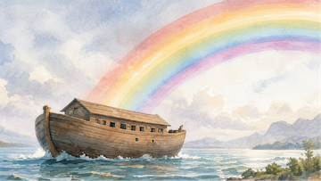
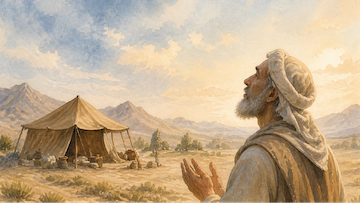
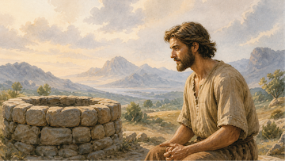
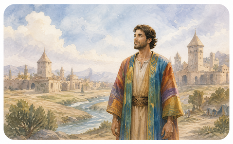

The Beginning
Genesis 1–2
Creation of the heavens and the earth.
Explore. Discover. Understand.
A calm visual journey through the Book of Genesis. Timelines, family connections, scripture, film links, maps, and study materials arranged for deep learning.
Explore Genesis through its major story movements, then dive into all 50 chapters below.
Genesis 1–2
Creation of the heavens and the earth.
Genesis 3–5
The first sin and the first family line.

Genesis 6–9
God’s covenant with Noah and the flood.
Genesis 10–11
The table of nations and Tower of Babel.

Genesis 12–25
God’s promise and Abraham’s faith.

Genesis 21–27
The promise continues with Isaac.
Genesis 25–36
Jacob’s journey and God’s faithfulness.

Genesis 37–50
Joseph’s rise and God’s plan fulfilled.
Selected Timeline Chapter
Genesis 1–2
In the beginning, God created the heavens and the earth.
Each major movement links to video, scripture, maps, prompts, and the related family line.
Enter Story Room →Full Chapter Explorer
Select any chapter for a focused summary, key people, and the related family context.
Chapter 1
Genesis 1
In the beginning God created the heaven and the earth.
The in-page reader uses the King James Version only. Scroll inside the panel to read the full chapter.
Loading Genesis 1...
Interpretive focus
This chapter introduces a foundational movement in Genesis. Read it by watching what God does, what changes in the human family, and how the narrative prepares the chapters that follow.
The chapter belongs to a larger family movement in Genesis.
Story Room
Each major movement can become a focused learning room with film, study video, scripture, maps, and discussion prompts.
Genesis 1:1
In the beginning, God created the heavens and the earth.
Read passage →Study prompts
For Schools
The Genesis Project can be offered to Christian schools as a classroom-safe visual study tool: no student accounts, no student data collection, no ads inside the student experience, and a clear KJV-only scripture reader.
Timeline cards, chapter summaries, family lineages, and story rooms help students see the structure of Genesis before they discuss interpretation.
Paid add-on with lesson plans, worksheets, quizzes, discussion prompts, printable lineage maps, and suggested classroom sequences.
Static website, offline zip option, KJV-only scripture, no login requirement, and no student-facing programmatic ads.
Pilot
$0
Use the public site in class and collect teacher feedback.
Best first revenue
CAD $49
A one-time downloadable classroom kit for individual teachers.
School license
CAD $399
For schools that want a branded, supported, classroom-safe copy.
Network
Custom
For Christian school associations, homeschool networks, churches, or curriculum partners.
The Genesis Project is a static learning site designed for personal Bible study, teaching, and guided exploration. It combines story movements, a focused family tree, chapter-by-chapter summaries, and a curated study room into one calm interface.